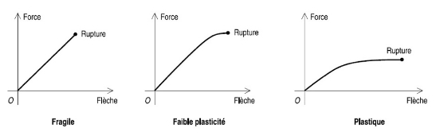

31
31Kilian Meininger 31
 Fiche
Rapin – Introduction et propriétés des biomatériaux # # Table des
matières I) Introduction : les biomatériaux et
la science des matériaux 1
Fiche
Rapin – Introduction et propriétés des biomatériaux # # Table des
matières I) Introduction : les biomatériaux et
la science des matériaux 1
A. Exigences liées à l’usage des biomatériaux 1
B. Choix du matériau : exemple de la prothèse de hanche 2
D. Classification des matériaux en fonction de la liaison entre atomes 2
 II. Cohésion des matériaux :
liaison entre les atomes 3
II. Cohésion des matériaux :
liaison entre les atomes 3
B. Liaisons chimiques et propriétés 3
4. Liaisons faibles : Van der Waals et hydrogène 5
A. Les défauts ponctuels : défaut de dimension 0 7
B. Les défauts de dimension 1 : les dislocations 7
C. Les défauts de dimension 2 : les joints de grains 9
D. Les défauts de dimension 3 9
I. Élasticité : domaine des déformations réversibles 11
A. Déformations élastiques simple – sollicitation en traction 11
1. Démonstration de la loi de Hooke : modèle des ressorts 12
2. Explication : Modèle du ressort 12
B. Relation entre propriétés 12
B. Notions de viscoélasticité et viscoplasticité (important ++) 14
III. Comportement mécanique des matériaux : essai de traction 15
2. Notion de matériau ductile/fragile : propriétés antagonistes 16
B. Le domaine de plasticité 17
IV. Dureté et les essais de dureté 20
C. Méthode de détermination 21
B. Le mouton – pendule ou mouton de Charpy 26
D. Ténacité, limite d’élasticité et température 26
A. Différents types d’essais de fatigue 27
D. Facteurs d’influence des phénomènes de fatigue 29
IX. Comportement mécanique particulier 30
A. Cas des alliages à mémoire de forme et phénomène de superélasticité 30
Infos examen : le prof pose plusieurs petites questions sur l’ensemble de ses cours plutôt que sur 1 seul cours en particulier, sous forme de petite question, QCM, QROC ou questions de réflexion.

Exemples de biomatériaux présents dans le corps humain. Tous les matériaux ne sont pas compatibles avec l’être humain : il y a des problèmes de corrosion.
-Le matériau répond à des exigences : mécaniques, chimiques.
-Différents types de matériaux** : métaux et alliages, céramiques, polymères, composites, silicones…
-Fonction des contraintes d’utilisation** : propriétés mécaniques, inertie chimique, propriétés de couleurs, propriétés électriques.
Exemple 1 : Le stent est un
dispositif qui permet de dilater une artère. Grâce un alliage de titane,
on a une mémoire de forme, l’augmentation de température en passant le
matériau de l’extérieur vers l’intérieur du corps permet la dilation du
dispositif dans le vaisseau sanguin.
Exemple 2 : la prothèse de hanche est composée d’une cuve en titane, d’une cupule en polymère (® auto lubrifiant) et d’une tête fémorale en céramique (® car la tête est en friction, on a besoin de dureté).
-Tout matériau est soumis à des exigences au niveau de sa surface (qualité, beauté, porosité), de ses propriétés mécaniques et de sa résistance à la corrosion vis-à-vis des micro-organismes, biofilms, …
-Dans le cadre des biomatériaux, il y a 2 exigences supplémentaires : la stérilité et biocompatibilité (non allergisant, non toxique)
Q° exam = Quelles sont les exigences des biomatériaux comparés aux matériaux classiques ? ® Stérilité + biocompatibilité
- Biomatériau = matériau non vivant, appartenant à un dispositif médical, possédant des vertus thérapeutiques ou non, et intervenant avec les tissus environnent.
Exemple d’un dispositif médical qui n’est pas un biomatériau= la chaise roulante (pas de contrainte de stérilité ou de biocompatibilité car n’interagit pas avec les tissus du corps)
-Le matériau a des propriétés requises pour permettre une implantation :
| Physiques | propriétés mécaniques proche de celle de l’os (transfert des contraintes). Problème de l’usure, légèreté. |
|---|---|
| Chimiques | résistance à la corrosion, inertie chimique par rapport au milieu (sang, salive, milieu soufré), biocompatibilité : corps humain = milieu agressif et corrosif avec de fortes concentrations en chlorures et en oxygène dissous (plasma sanguin et liquide interstitiel). |
1er graphe : coût par unité de poids en fonction du type de matériau : les matériaux spéciaux sont les plus chers, on y inclut tous les biomatériaux
2e graphe : coût des produits manufacturés par unité de poids. Les matériaux biomédicaux sont les plus chers également. Ces matériaux sont plus chers car répondent à des exigences supérieures (stérilité, biocompatibilité) et la production est faite à la demande, adaptée à chaque patient (ex : lentilles de contacts, prothèses, couronnes)
Tombe à l’exam !
® 3 familles :
| Alliages métalliques | |
|---|---|
| Céramiques | |
-La dureté et la ductilité sont 2 propriétés antagonistes. La dureté s’accompagne généralement d’une autre propriété qui est la fragilité. Ainsi, un composite permet d’allier le dur et le malléable : c’est pour ça qu’on s’en sert pour faire les obturations dentaires.
-Ductilité = aptitude qu’à un matériau à se déformer sous l’action d’une force 2. # Cohésion des matériaux : liaison entre les atomes
-1e colonne = alcalin : 1 électron de valence (® électron libre disponible pour faire des liaisons)
-2e colonne = alcalino-terreux ® 2 électrons de valence
-Éléments de transition : métaux d’usage courant et métaux nobles
-Halogènes ® 7 électrons de valence
 -Gaz
rares : saturé à 8 électrons ® respect de la
règle de l’octet.
-Gaz
rares : saturé à 8 électrons ® respect de la
règle de l’octet.
Dans la classification, il y a 2 grandes familles :
Séparation du tableau en diagonale en 2 catégories d’atome :
Pour comprendre les caractéristiques des matériaux, plusieurs facteurs sont à prendre en compte :
| Liaisons fortes | Liaisons faibles |
|---|---|
-C’est le type de liaison qui donne le type de matériau.
-La liaison chimique des atomes permet de classifier les familles de matériaux /! : Deuxième question de l’exam. 1. ### La liaison métallique ➔ Mise en commun des électrons de valence formant un gaz d’électrons où ils sont plus ou moins libres.
-Se caractérise aussi par la mise en commun d’électrons entre plusieurs atomes. La liaison métallique est délocalisée, càd que chaque atome peut être considéré comme un ion baignant dans un gaz d’électron.
-Les électrons se déplacent facilement partout dans le cristal, ce qui explique la bonne conductivité électrique et thermique des métaux. La liaison n’est pas directionnelle, les atomes s’empilent de façon simple et compacte. Sa déformation est aisée et explique la ductilité des métaux.
- (ATTENTION EXAM) Un matériau est dit ductile s’il peut être mis en forme sous l’action d’une sollicitation mécanique. La ténacité est l’énergie nécessaire pour rompre le matériaux
-Caractéristiques de la liaison : forte, délocalisée, isotrope.
-Quelques propriétés :** résistance mécanique, ductilité/ténacité, conductivité électrique et thermique**
Dans cette liaison, chaque atome donne 1 électron. 1) #### Les structures cristallines des métaux
 La
maille élémentaire = plus petit motif, qui reproduit
dans les 3 directions de l’espace, va générer le solide.
La
maille élémentaire = plus petit motif, qui reproduit
dans les 3 directions de l’espace, va générer le solide.
-Formations d’orbitales moléculaires et mises en communs d’électrons → liaisons directionnelles, longueur et angle bien définis. Très sensible dès qu’on les déforme.
-Mise en commun d’électrons afin de saturer les couches électroniques externes de chacun des atomes de la molécule
- La liaison covalente est également une liaison forte puisqu’elle permet de saturer la couche électronique externe des atomes (règle de l’octet) à Diamant est donc très résistant.
-Caractéristiques de la liaison : forte, localisée, direction particulière → structure particulière (diamant)
-Quelques propriétés :** résistance mécanique, rigidité, pas de déformation plastique, fragilité (car liaison directionnelle), sensibilité aux défauts, dureté, haut point de fusion.
-Dureté : résistance qu’oppose un corps à la pénétration d’un corps extérieur, appelé pénétrateur
Dans les biomatériaux, la silice est utilisée dans le dentifrice sous forme de petite bille / particule ® abrasion pour enlever la plaque dentaire. 1. ### La liaison ionique
-Compléter la couche de valence par transfert d’électrons du cation à l’anion.
-Se caractérise par l’échange d’électrons entre 2 atomes. Cette liaison est forte car elle sature la couche extérieure des atomes qui deviennent des ions.
- Concerne essentiellement : les éléments qui ont peu d’électrons sur leur couche externe et les éléments qui ont des couches externes presque saturées.
-Caractéristiques de la liaison : forte, non directionnelle.
-Quelques propriétés : rigidité, pas de déformation plastique, fragilité, sensible aux défauts, dureté. 1. ### Liaisons faibles : Van der Waals et hydrogène
➔ Attraction dipôle-dipôle entre atomes ou molécules électriquement neutres.
-Éléments concernés : molécules polaires ou polarisables temporairement.
-Caractéristiques de la liaison : faible, sensible à l’agitation thermique (bcp + faible que les autres)
-Quelques propriétés :** faible résistance, sensibilité à la température.**
Ex : graphite : faible résistance mécanique car liaisons de Van der Waals entre ses feuillets.
Polymères : répétition d’un motif élémentaire = le monomère.
Ils peuvent être : linéaires, ramifiés ou réticulés.
Structure: 2 types de liaisons dans les polymères
Bilan
è Liaison métallique : métaux rigides et ductiles
è Liaison covalente ou ionique : céramique rigide mais fragile
| Types de solides | Propriétés électriques | Propriétés optiques | Propriétés mécaniques | Point de fusion | Intensité des forces de liaison |
|---|---|---|---|---|---|
| Métalliques | Conductivité électronique élevée | Opaques et réfléchissants | Ductiles et malléables | Elevé | Fortes |
| Ioniques | Fragiles | Elevé | Fortes | ||
| Covalents | Transparents à l’infrarouge | Très élevé | Très fortes | ||
| Conductivité électrique nulle ou très faible | Transparents | Très bas | Très faibles |
La classe des matériaux dépend du type de liaisons.
| Défauts à 0 dimension (point) | Défauts atomiques : Impureté, lacune, interstitiel, atome à une mauvaise position cristallographique. |
|---|---|
| Défauts à 1 dimension (ligne) | Défauts linéaires, dislocations (très importantes dans les métaux) |
| Défauts à 2 dimensions (plan) | Macles, et joints de grains |
| Défauts à 3 dimensions (objet) | Inclusions, précipités |

Par exemple dans du cuivre porté à 1000°C , on compte environ 1025 lacunes/m3. 1. ### Atome interstitiel
Un atome interstitiel : atome qui occupe un site interstitiel en accord avec la taille du site, ou avec légère déformation du site. Généralement, les petits atomes sont compatibles avec les sites octa et tétra du réseau et forment des liaisons partiellement covalentes avec le métal.
-Les interstitiels influent les propriétés mécaniques, car ils gênent le mouvement des dislocations, ce qui entraine un effet généralement durcissant.

Parmi les défauts de dimension 0, on peut rencontrer des atomes en substitution. Il s’agit d’un hétéro-atome qui vient occuper une position normale du réseau. Deux cas sont envisagés :
| Substitution par un atome de plus petite taille | Il s’en suit une déformation avec un relâchement du réseau |
|---|---|
| Substitution par un atome plus gros que l’atome de la structure | Ceci va se traduire par une déformation locale du réseau |
 Les atomes en
substitution influencent les propriétés mécaniques en gênant ou bloquant
le mouvement des dislocations. On parle de durcissement structural.
Les atomes en
substitution influencent les propriétés mécaniques en gênant ou bloquant
le mouvement des dislocations. On parle de durcissement structural.
Atome de plus petite taille que le réseau : relâchement du réseau
Atome plus gros :
Déformation du réseau


Les dislocations sont des lignes reliant sans discontinuité des atomes en situation particulière (différente qu’au sein du réseau normal) vis à vis de certains de leurs voisins. Deux cas simples sont à envisager : les “dislocations coin” et les “dislocations vis”. Les dislocations réelles sont en réalité une combinaison des deux.
 -Les
dislocations coin correspondent à un demi-plan atomique inséré entre
deux plans du réseau.
-Les
dislocations coin correspondent à un demi-plan atomique inséré entre
deux plans du réseau.
 -Une dislocation vis
peut se décrire comme une « déchirure d’un catalogue » avec
positionnement de la partie supérieure de la page n sur la partie
inférieure de la page n+1.
-Une dislocation vis
peut se décrire comme une « déchirure d’un catalogue » avec
positionnement de la partie supérieure de la page n sur la partie
inférieure de la page n+1.
Dislocations : ordres de grandeurs
Mouvement des dislocations
Les dislocations ont la possibilité de se déplacer sous l’effet d’une contrainte appliquée au matériau. C’est d’ailleurs ce mouvement de dislocations qui permet d’expliquer la déformation plastique des matériaux, et donc la plasticité.
Analogie avec le déplacement d’un tapis / analogie avec le mode de locomotion d’une chenille

Examen+++ :
-Les joints de grains font partie des défauts de dimension 2. Il faut à ce niveau différencier un solide monocristallin appelé monocristal, d’un solide polycristallin composé de plusieurs monocristaux. Chaque monocristal est appelé en chimie du solide et science des matériaux grain.
Seul le monocristal est construit à partir de la répétition dans les trois directions de l’espace de la maille élémentaire. Les matériaux d’usage courant comme les matériaux de structures tels que les métaux et alliages, les céramiques sont des composés de poly cristaux.

 Les zones
situées entre les monocristaux constituant le raccordement
entre ces monocristaux sont appelées les joints de
grains.
Les zones
situées entre les monocristaux constituant le raccordement
entre ces monocristaux sont appelées les joints de
grains.
Mise en évidence des joints de grains
-Ce sont des zones de désordre par rapport au cœur du grain
-Les joints de grains sont des zones de fragilité du matériau. La microstructure, c’est-à-dire la forme et la taille des grains révèle l’histoire du solide. Ceci permet d’interpréter l’élaboration où la mise en forme d’objets archéologique.
 Les défauts de
dimension 3 sont des précipités d’une seconde phase au niveau du
matériau. Ces précipités peuvent être de trois types (cf. graphe
ci-dessous). Ces précipités auront un rôle important sur
les propriétés mécaniques : blocage des dislocations.
Les défauts de
dimension 3 sont des précipités d’une seconde phase au niveau du
matériau. Ces précipités peuvent être de trois types (cf. graphe
ci-dessous). Ces précipités auront un rôle important sur
les propriétés mécaniques : blocage des dislocations.

Verre : liquide à température ambiante ?
Verre ® classe des matériaux amorphes
Représentation schématique en 2D de la silice cristallisée et de la silice vitreuse.
La différentiation entre solide cristallisé et solide vitreux s‘effectue lors du refroidissement (figure ci-contre).
A la température Tf dite de fusion (ou cristallisation), le liquide devient solide ce qui se traduit par une mise en ordre des atomes ou des molécules. On dit que le liquide a cristallisé ce qui se traduit par un saut important dans l’évolution du volume (trajet rouge). Ce passage liquide à cristal correspond à une transition s’effectuant à l’équilibre.
Dans le cas d’un liquide suffisamment visqueux à la température de fusion, un refroidissement rapide peut permettre la formation d’un liquide en surfusion. C’est la caractéristique d’un verre, matériau qui a la structure d’un liquide, mais les propriétés d’un solide.

De nombreuses substances sont vitrifiables. On peut citer des éléments comme le soufre, le phosphore, des oxydes tels que la silice, les oxydes de germanium, de bore, de phosphore…
Propriétés mécaniques des biomatériaux 1. # Élasticité : domaine des déformations réversibles
Info examen : Cette partie tombe souvent à l’examen !!
→ Domaine des déformations réversibles
En déformation élastique, le matériau s’allonge quand on l’étire (charge) et quand on le relâche (décharge), il reprend sa dimension originelle. Selon correspond en fait à l’élongation de la liaison : pas de déplacement d’atome)
σ : Contrainte
F : Force
S : Surface de la section
E : Module d’élasticité : traduit la rigidité du matériau
ε : Déformation en pourcentage
Loi de Hooke dit que la contrainte
σ (= force ramenée à la surface) appliquée au
matériau est proportionnelle à la déformation ε et au
module d’élasticité E. 
Loi de Hooke : σ = E x ε
-Les propriétés mécaniques des solides :
La réponse d’un matériau à une sollicitation mécanique, peut se faire de façon élastique, c’est-à-dire de façon réversible, ou de façon plastique, c’est-à-dire de façon permanente.
Définitions à savoir pour l’exam :
Selon un graphique où l’on exprime la contrainte en fonction de la déformation, E (= module d’élasticité) exprime la pente de la droite :
Exemple : le diamant est un matériau
rigide.
A quoi correspond 1 GPa ? giga = 109
Quelle est la masse à suspendre à un fil de nylon de 1mm² pour l’allonger de 1% ? *
On remarque que le module d’élasticité (encore appelé module d’Young E) correspond à la masse en kg de la matière considéré pour l’allonger de 1% dans le domaine élastique. Exemple du diamant : E = 1000 GPa ; Cela signifie qu’il faut une masse d’une tonne pour un allongement de 1% pour 1mm2
Métal = rigide et ductile ≠ céramique = rigide et fragile
Les matériaux peuvent être classés en 3 grandes familles définies en fonction du type de liaisons chimiques régissant la cohésion de l’édifice solide :
Attention : on ne parle pas de dureté ! La dureté est une propriété de surface (on voit après). 1. ### Démonstration de la loi de Hooke : modèle des ressorts
Le module E exprime la proportionnalité entre une force appliquée (divisée par une section) et un allongement (divisé par une longueur initiale I0) ; une telle relation se retrouve aussi dans la déformation d’un ressort.
→ Élasticité à échelle atomique = élongation de liaison
Coefficient de Poisson : coefficient qui relie le fait qu’il s’allonge dans 1 direction et qu’il rétrécit dans les 2 autres. Idéalement, coefficient = 0,5
 En
Traction : le matériel s’allonge mais en réalité il s’allonge dans un
sens et « maigri » dans les autres sens (exemple des
élastiques). Quand on tire sur une céramique c’est comme si on
augmentait le volume donc moins épais à certains endroits. 1. ###
Explication : Modèle du ressort
En
Traction : le matériel s’allonge mais en réalité il s’allonge dans un
sens et « maigri » dans les autres sens (exemple des
élastiques). Quand on tire sur une céramique c’est comme si on
augmentait le volume donc moins épais à certains endroits. 1. ###
Explication : Modèle du ressort
Quel que soit le type de liaisons :
Liaison avec les atomes « sur la diagonale »
→ Explique l’allongement dans le sens de l’effort et la contraction dans le sens perpendiculaire
Lorsque que le matériau est comprimé dans les 3 directions de l’espace, le matériau est soumis à une pression isovolumétrique.
Enthalpie de sublimation : énergie à fournir pour sublimer le solide ; cela correspond à l’énergie de liaison. On note une bonne corrélation entre la force de liaison et le module d’élasticité
Température de vaporisation : aussi une bonne relation avec le module d’élasticité
Déformation permanente : A l’échelle macroscopique caractère irréversible et déplacement d’atomes à l’échelle anatomique.
 C’est
le domaine qui apparaît après le domaine élastique.
C’est
le domaine qui apparaît après le domaine élastique.
La première partie est linéaire puis courbe.
Quand on n’est plus sur la partie linéaire, on est dans le domaine plastique : déplacement d’atome, déformation permanente.
On est linéaire jusqu’à une certaine limite : limite élastique.
A partir d’une certaine limite on n’est plus dans la zone réversible mais dans la zone plastique irréversible donc permanente.La déformation dans le domaine plastique c’est aussi la ductilité (synonyme = maléabilité)
Le contraire de la ductilité est la fragilité.
Pourquoi et comment les métaux sont ductiles ? Grâce aux dislocations = défaut de dimension 1
Dislocation = perturbation de la structure autour d‘une ligne reliant des atomes. Deux cas simples : les dislocations coins et les dislocations vis
Les dislocations réelles = combinaison mixte des deux. Les dislocations se déplacent dans un plan de glissement à l’intérieur du cristal. Le déplacement d’une dislocation entraîne une déformation permanente du métal à Déformation plastique = irréversible.
Mouvements des dislocations : uniquement dans les composés à liaisons métalliques car non-directionnelles.
 Peu
d’atomes impliqués et peu de liaisons à rompre simultanément à
Déformation plastique facilitée par la présence de dislocations.
Peu
d’atomes impliqués et peu de liaisons à rompre simultanément à
Déformation plastique facilitée par la présence de dislocations.
Les dislocations sont responsables de la déformation plastique (irréversible des matériaux) = ductilité.
à Pas ou peu de dislocations dans les composés ioniques : électro-neutralité locale = Fragilité
à Pas ou peu de dislocations dans les composés covalents : liaisons directionnelles = Fragilité
Conclusion :

Propriété qui dépend du temps. A T0, on impose une force que l’on maintien pendant un Tt puis à T1 on relâche.
Dépend également du temps. Propriété importante car elle concerne les matériaux à empreinte
 Le
matériau met du temps à revenir à sa position d’équilibre qui sera
différente de la position de départ.
Le
matériau met du temps à revenir à sa position d’équilibre qui sera
différente de la position de départ.
Déformation continuelle dans le temps → On ne retrouve pas la forme initiale è déformation permanente.
C’est cette propriété qui fait qu’il faut un retrait rapide du porte-empreinte car si on exerce une contrainte pendant un certain temps, même faible, on déforme le matériau
Cas particulier : le fluage (influences de la T°) 1. # Comportement mécanique des matériaux : essai de traction
La machine de traction est constituée de cellules avec une partie fixe et une partie mobile (poutre avec les mors).
 Elle permet d’enregistrer la force qu’on applique
en fonction de la déformation. Cette machine mesure la rigidité, la
viscoélasticité, la viscoplasticité…
Elle permet d’enregistrer la force qu’on applique
en fonction de la déformation. Cette machine mesure la rigidité, la
viscoélasticité, la viscoplasticité…
La pièce que l’on teste s’appelle l’éprouvette. Elle est maintenue entre 2 mors et on tire. Elle a une forme particulière (forme normalisée) et se compose de deux parties :
\1. Une éprouvette est fixée entre les mors
\2. La force de traction est appliquée selon une vitesse de déformation constante
\3. L’essai est souvent arrêté après la rupture de l’éprouvette : On appelle donc cela un essai destructif

Courbe de traction F = f(dl) : charge (force par unité de surface) en fonction de l’(allongement)
On suit la loi de Hooke.
\1. La linéarité (domaine élastique/déformation réversible) stoppe brutalement et on obtient une courbe en cloche ensuite
\2. Domaine plastique. Au-delà, l’éprouvette est déformée de façon permanente/irréversible 1. ## Le domaine d’élasticité
Correspond à un stade de déformation élastique : réversible ; La contrainte est proportionnelle à l’allongement (droite)
L’éprouvette reprend sa forme initiale si l’essai est arrêté (au-delà = déformation irréversible)
Plus la pente de la droite est verticale, plus le matériau est rigide
Pente = module d’élasticité ou module d’Young
Allongement accompagné d’une contraction homogène sur toute la longueur de l’éprouvette
Info examen : ce passage est à bien savoir, il est très important
 L’éprouvette commence à subir
une déformation irréversible
L’éprouvette commence à subir
une déformation irréversible
Limite d’élasticité apparente : Re
En pratique on a du mal à la voir : limite d’élasticité conventionnelle Re0,2 :
Re0,2= FS0 pour A%=0,2
Re0,2 = pour un allongement de 0,2% 1. ### Notion de matériau ductile/fragile : propriétés antagonistes
Information examen : A APPRENDRE pour l’examen → on ne peut pas être fragile ET ductile.
Fragile : Rupture de l’éprouvette dans le domaine élastique (ex : verre, céramique)
→ Limite de l’élasticité du matériau non atteinte
→ Pas de domaine plastique
Ductile : Apparition d’un domaine plastique important (cloche importante)
Ductilité = capacité plus ou moins grande du matériau à subir une déformation plastique (de façon permanente) sans se rompre (exemple : le métal)

Comportement fragile = impossibilité de déformation plastique (on ne peut utiliser ce genre de matériau pour un travail mécanique)
ATTENTION : On ne parle pas ici de « dur » et de « mou ». Ces 2 notions sont pour plus tard
Déformation plastique = déformation de l’éprouvette non récupérable à 100% (le prof a insisté sur les 100%)
1er domaine : stade homogène = les allongements sont répartis : Aucune zone de l’éprouvette ne s’allonge donc plus qu’une autre
2ème domaine : stade de striction = La déformation est hétérogène, située dans les zones très localisées (point B du graphe)
Zone de striction = endroit où le plan de glissement devient le plus favorable au niveau du cisaillement du matériau par rapport à l’ensemble de l’éprouvette, plus favorable à se déformer. C’est l’endroit qui s’amincit le plus localement et se rompt ; ça repère les zones de fragilité du matériau en passant. Par exemple, c’est ce qu’il se passe quand on étire au maximum un sachet plastique.
Remarque :
 Longueur
de l’éprouvette avant la rupture > longueur après la rupture
Longueur
de l’éprouvette avant la rupture > longueur après la rupture
→ Car récupération de la partie élastique de la déformation
Allongement total à la rupture : plastique parallèle au domaine élastique depuis le point de rupture
→ Ductilité = capacité plus ou moins grande du matériau à subir une déformation plastique sans se rompre

Essai de traction : Bilan
Info examen : schéma déjà tombé à l’exam sans les indications écrites

Essai de traction au-delà de la limite d’élasticité A = phase de charge
Arrêt de l’essai en M : phase de décharge
→ Il s’agit du passage du matériau dans le domaine plastique
L’éprouvette conserve un allongement permanent (OM’)
Avant A on a juste des liaisons tendues entre les atomes. Après A on a un déplacement d’atomes (ils se rapprochent mais pas jusqu’au point de départ)
Reprise de l’essai : application de nouveau de la charge → augmentation du nombre de dislocations → déformation plastique à partir de M → on a une nouvelle limite d’élasticité supérieure à A
L’écrouissage consiste en une augmentation de la limite élastique qui n’est pas une grandeur intrinsèque du matériau, (contrairement au module d’Young par exemple) elle dépend de l’historique et du mode de formation du matériau (chauffé, écrouie, …).
➔ L’éprouvette est écrouie
Écrouissage = Accroissement de la contrainte nécessaire pour déformer plastiquement l’éprouvette = augmentation de la contrainte élastique

 →
Déformation globale du réseau
→
Déformation globale du réseau
Ténacité : énergie nécessaire pour provoquer la rupture de l’éprouvette = aire située entre la courbe et l’axe de déformation jusqu’au point de rupture
Plus l’aire est importante, plus le matériau est tenace. L’énergie est le travail d’une force. La force c’est la contrainte, la distance c’est l’allongement.
Déjà tombé à l’examen : Schéma de droite :
 En
haut, pente forte = ténacité faible car aire sous la courbe très
faible. Correspond à du verre ou une
céramique, matériau rigide et fragile.
En
haut, pente forte = ténacité faible car aire sous la courbe très
faible. Correspond à du verre ou une
céramique, matériau rigide et fragile.Le titane est un matériau rigide et ductile par exemple
A retenir :
 Comportement
fragile : ténacité faible
Comportement
fragile : ténacité faibleContrainte en fonction de l’allongement, peut tomber à l’examen.
 Les termes de dur/mou sont faux
dans ce schéma pris sur internet, cela ne veut rien dire :
Les termes de dur/mou sont faux
dans ce schéma pris sur internet, cela ne veut rien dire :
 1. ##
Ténacité et écrouissage
1. ##
Ténacité et écrouissage
Écrouissage → augmentation de la limite d’élasticité
Rigidité/module d’Young : invariable, LA SEULE propriété intrinsèque du matériau ; Elle correspond à l’énergie de liaison ou à la température de fusion
ATTENTION : A l’examen il peut demander « quelles sont LES grandeurs intrinsèques d’un matériau » mais c’est un piège, il n’y en a bien QU’UNE SEULE
Les limites élastiques, la ductilité, la ténacité on ne peut pas les prévoir pour chaque matériau.
 Il
faut imaginer la courbe de traction de chaque élément indiqué
Il
faut imaginer la courbe de traction de chaque élément indiqué
Les métaux/alliages/composites sont ductiles, rigides et tenaces.
Les céramiques ne sont pas ductiles, sont rigides, fragiles et non tenaces

Les polymères sont non rigides et très ductiles
On peut déduire la ténacité par l’aire sous la courbe.
Dureté et essai de dureté :
Dureté = résistance d’un corps opposé à une déformation locale, sous une charge constante, correspondant à la pénétration d’un autre corps (pénétrateur) théoriquement indéformable. C’est donc la résistance d’un corps à la pénétration d’un autre corps.
La dureté est une rigidité superficielle et apparaît comme la résistance à la rayure (par exemple rayer une table en bois est facile car le bois n’est pas très dur (ce sera plus dur de rayer du verre par exemple)) è « Équivalent à de la ductilité superficielle »
La dureté est d’autant plus grande que la pénétration du corps est faible. (donne peu de renseignements mais utilisée car rapide et facile à mettre en œuvre)
Les essais habituels de dureté sont simples, rapides, et généralement non destructifs
→ Moyen très commode et très utilisé dans les ateliers
Pour vérifier l’évolution des propriétés d’une pièce métallique, notamment lors des traitements thermiques et mécaniques
Pour contrôler la conformité des fournitures
Précautions d’emploi :
Applications usuelles :
Comparaison des différents essais :
Pas à savoir par cœur, pour la culture.
Le prof utilise Vickers. Plus d est petit, plus la dureté est grande. Vickers = pyramide à base carrée qui est en diamant.
Diamant est très dur mais fragile, non tenace et non ductile.
A retenir : on utilise des pénétrateurs :

 L’échelle de
Mohs :
L’échelle de
Mohs :
Détermine l’aptitude à la déformation d’un matériau sur deux appuis avec une application de l’effort à mi-distance des appuis (exemple : appuyer sur le milieu d’une table)
Déformation (flèche = hauteur d’affaissement du matériau) imposée à une éprouvette normalisée à vitesse de déformation constante
La force qu’oppose l’éprouvette à cette déformation est mesurée
Remarque :
L’essai de flexion n’est peu, voire pas utilisé pour les matériaux ductiles (bien pour matériaux peu ductiles et très rigides). Application clinique typique : pontique, bridge
Flexion 3 points :
Au niveau de l’éprouvette :
Fibre neutre = ligne imaginaire = invariante de la longueur de l’échantillon.
 On
regarde la flèche c’est-à-dire l’enfoncement du
matériau dû à la charge. On regarde la hauteur entre le centre de
l’éprouvette initialement et après avoir appuyé.
On
regarde la flèche c’est-à-dire l’enfoncement du
matériau dû à la charge. On regarde la hauteur entre le centre de
l’éprouvette initialement et après avoir appuyé.

Courbes de flexion : → nature du matériau
Courbe sur des matériaux peu ductiles. On retrouve le même type de courbe qu’avec l’essai de traction, mais abscisse et ordonnée changent.
1er : rupture à la sortie du domaine élastique, céramique, tige de verre
2ème : un peu de domaine ductile
3ème : très légèrement plastique : métal (ça plie donc aucun intérêt car ductile)
L’essai consiste à soumettre une éprouvette de forme cylindrique à 2 forces axiales opposées en la plaçant entre les plateaux d’une presse
 L’éprouvette :
simple cylindre de dimensions S0, L0
L’éprouvette :
simple cylindre de dimensions S0, L0
L0 ne doit pas être trop grand devant S0 à risque de flambage
Le porte-échantillon doit être plus dur que le matériau à tester.
Flambage : le matériau se déplace en son centre = effet à éviter.
Cas de l’amalgame :
Le test de compression « diamétrale » permet de préjuger du comportement en fin d’application des forces mises en jeu au cours de la mastication
Résistance à la compression = critère le plus employé dans la comparaison entre amalgames (amalgames sphériques, amalgames conventionnels, etc.)
Test réalisé à 1h, 24h, et à 7j après la réaction d’amalgamation entre Ag3Sn et Hg.

 A
7j, l’amalgame a atteint sa dureté maximale (= temps de
prise)
A
7j, l’amalgame a atteint sa dureté maximale (= temps de
prise)
Limite d’élasticité du matériau non atteinte 

 Rappel
:
Rappel
:
Essai de traction d’un matériau fragile : rupture de l’éprouvette dans le domaine élastique
L’effet de résilience permet de déterminer la ténacité.
Essai de résilience

 Essai
de résilience : détermine l’énergie nécessaire pour casser une
éprouvette pré entaillée (ténacité).
Essai
de résilience : détermine l’énergie nécessaire pour casser une
éprouvette pré entaillée (ténacité).
L’essai nécessite une éprouvette et un mouton-pendule.
 L’entaille
peut être :
L’entaille
peut être :

Étape 1 : Le pendule est relevé d’un angle α1 et bloqué dans cette position
Étape 2 : Le pendule est libéré
Étape 3 : Le pendule casse l’éprouvette puis remonte d’un angle α2 qui est mesuré
KV / KU = énergie consommée par la rupture de l’éprouvette = différence d’énergie potentielle (sans frottements)
La différence de hauteur entre h0 et h1 est l’énergie nécessaire à la rupture du matériau. Plus le matériau va être tenace moins le marteau va remonter en haut.
KV (entaille V)
KU (entaille U)
Info examen : Pas de question sur les formules
Si la ténacité chute on passe d’un comportement qui est ductile à un comportement qui est fragile.
Légère diminution de la limite élastique par rapport à la température (diminution 10%) donc le matériau devient plus ductile (moins fragile)
L’élasticité diminue mais le domaine de plasticité augmente. Le matériau devient plus tenace : exemple du forgeron
Si on est moins élastique on est plus ductile.
Ténacité (et résilience) chute brutalement avec température (400%) car on a augmenté la limite élastique.**
Les matériaux à basse température deviennent fragiles (exemple : gomme dans de l’azote liquide casse très facilement)
Propriétés mécaniques des biomatériaux (suite) # VIII. L’essai de fatigue
L’essai de fatigue étudie le comportement du matériau vis-à-vis de sollicitations alternées.
Fatigue : propriété que possède tout matériau à se fracturer au bout d’un certain nombre de cycles d’application de contrainte. Elle est responsable de 80 à 90% des avaries des pièces prothétiques dentaires comme les stellites, et les bras de crochet. 1. ## Différents types d’essais de fatigue


La contrainte σ (sigma) varie en fonction du temps et sa valeur est toujours inferieure à la limite d’élasticité (limite entre le domaine de la déformation élastique et la déformation plastique
 On calcule
ainsi le rapport de contrainte :
On calcule
ainsi le rapport de contrainte :
Avec : σmin, la contrainte minimum appliquée à l’éprouvette pendant l’essai
Et : σmax, la contrainte maximale appliquée à
l’éprouvette pendant l’essai 1. ## La courbe de
Whöler
On utilise σ = f(logN) :
Ainsi on obtient, pour une éprouvette soumise une contrainte cyclique comprise entre -σ et +σ :

On peut définir N comme étant le nombre de cycles nécessaires pour obtenir la rupture (= 106 à 108 cycles)
Cela est en théorie, car en pratique, il existe des courbes de Wöhler expérimentales avec des valeurs de probabilité théorique et des pourcentages de chance de rupture de l’éprouvette. Elles se présentent de la manière suivante :
On peut définir 3 zones sur les courbes de Wöhler :

| Zone sR | |
|---|---|
| Zone sM | Zone de fatigue ou d’endurance limité : la contrainte est inférieure à la limite élastique. C’est la zone de fatigue (plus on s’éloigne de la limite sE plus le nombre de cycle pour casser l’éprouvette sera élevé). Cette zone est celle de prédilection pour la plupart des essais de fatigue |
| Zone sC |
La fatigue dépend de plusieurs facteurs :
Les alliages à mémoire de forme (AMF) sont des alliages possédant plusieurs propriétés inédites parmi les matériaux métalliques :
La superélasticité : l’alliage est capable de se déformer énormément (jusqu’à 100%) de manière réversible sous l’effet d’une contrainte
L’effet mémoire simple sens : l’alliage est capable de retrouver par chauffage sa forme initiale après une déformation mécanique
Capteurs de température, actionneurs en robotique, manchons d’accouplement, agrafes pour fractures osseuses, stents …
Stents, fils d‘orthodontie, pinces chirurgicales, montures de lunettes, armatures de soutiens-gorges…